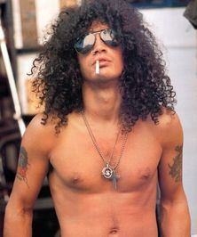
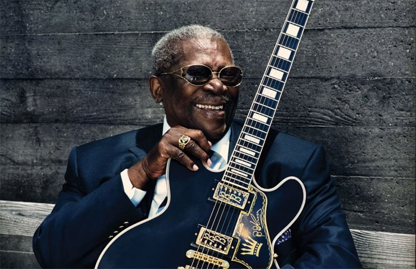

| Artista |
Nome |
história |
|  |
Slash |
Slash, nascido Saul Hudson em 23 de julho de 1965, é o famoso guitarrista
da banda Guns N' Roses. Reconhecido por seu icônico chapéu e cabelos cacheados,
ele é responsável por alguns dos riffs mais memoráveis do rock, incluindo "Sweet Child O' Mine".
Seu estilo distintivo mistura blues e hard rock, e ele se destacou como um dos grandes
ícones da guitarra, inspirando músicos ao redor do mundo. |
 |
Jimmy Page |
Jimmy Page é um dos guitarristas mais influentes da história do rock,
conhecido por seu trabalho como líder da banda Led Zeppelin. Nascido em 9 de
janeiro de 1944, na Inglaterra, ele começou sua carreira como músico de estúdio,
desenvolvendo um estilo único que combina blues, rock e folk. Seu uso inovador
de riffs e solos elétricos, além de sua habilidade em criar atmosferas sonoras,
revolucionou o gênero. |
|
Kirk Hammentt |
Kirk Hammett, nascido em 18 de novembro de 1962, é o lendário guitarrista da
banda Metallica. Ele se juntou à banda em 1983, trazendo um estilo de guitarra que
combina técnicas de metal com influências de rock e punk. Hammett é conhecido por seus
solos icônicos e riffs pesados, além de sua paixão por horror e cinema, que se refletem em
sua música e estética visual. |
|  |
B.B. King |
B.B. King, nascido em 16 de setembro de 1925, foi um dos mais importantes músicos
de blues de todos os tempos. Com seu famoso guitarrista "Lucille", ele trouxe uma
nova expressividade ao gênero, misturando suas raízes do gospel e do jazz. Suas
performances emocionantes e seu estilo de tocar com uma mistura de vibrato e bends
de notas deixaram um legado duradouro, influenciando gerações de guitarristas. |